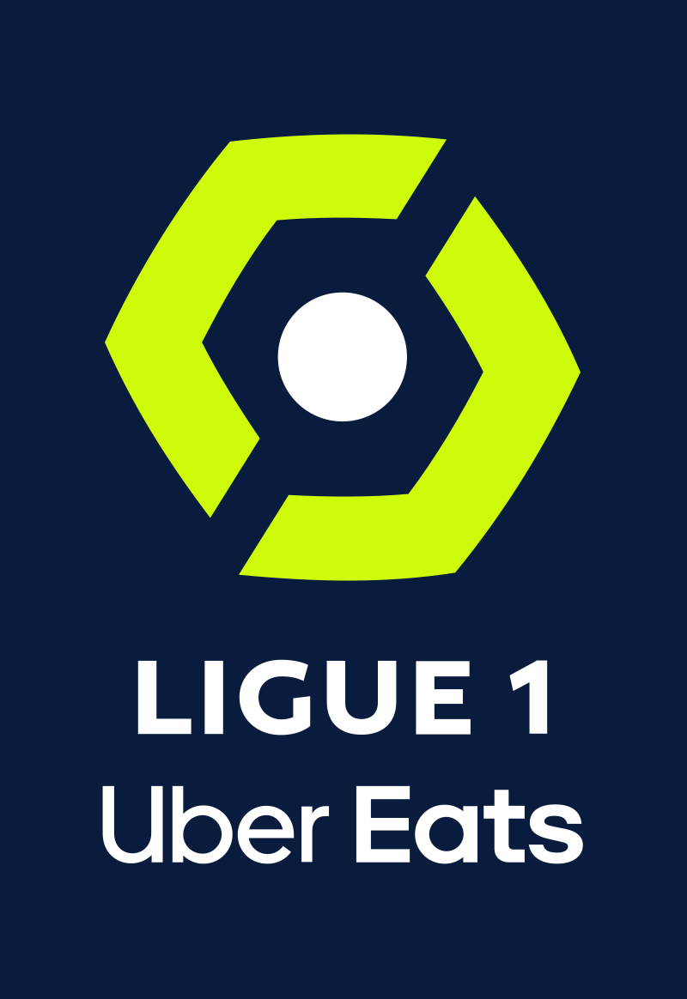

BSc (Hons) Data Science Final Project | COBScDS221P-008
Introduction
A brief overview of the background of the research project.
Introduction to the award
The Fédération Internationale de Football Association ‘Team of the Season’ (FTOTS) is an annual end-of-season event conducted by Electronic Arts (EA) in their FIFA (now EA SPORTS FC) videogame series where the best-performing footballers from leagues around the world are celebrated. The accolade’s recipients receive several in-game boosts within EA’s FIFA videogame series in addition to receiving immense real-world honour/recognition. FTOTS are decided by EA developers themselves, considering input from fans via voting.
The focus of this undertaking was on choosing league-wise teams consisting of the ‘best’ footballers per season, out of those playing in the big-five European leagues (in terms of revenue/popularity), from seasons 2011-12 to 2022-23, utilising machine learning.
 |
 |
 |
 | |
 |
 |
 |
 |
 |
History and Importance of the award
 The FTOTS has been presented
to players from season 2011-12. Every season since, a selected number of players have been chosen from each league based on their playing position.
The FTOTS has been presented
to players from season 2011-12. Every season since, a selected number of players have been chosen from each league based on their playing position.
Over the years, the event has grown to become the one sparking the most excitement in the FIFA videogame-consuming demographic. The award has become increasingly important for players throught the years, since it is testament to a player’s achievements/abilities, recognising their contributions to their teams in a given season.
Past Winners
The award can be won multiple times by the same player (i.e. in different seasons). Accordingly, Lionel Messi holds the record for most inclusions in the FTOTS with twelve. A total of five different players have seen inclusions in three distinct leagues, which is the record: Ángel Di María, Cristiano Ronaldo, James Rodríguez, Pierre-Emerick Aubameyang and Zlatan Ibrahimović.

Several players from the same club can also be included in any given season's FTOTS. It was observed that in selected seasons, some of the league's FTOTS was dominated by selected clubs, with some clubs recording as many as nine inclusions in a single FTOTS.

Brief Overview of the Overall Objective of the Research Project
The FTOTS incorporating human-based voting in its selection process means that the award has resulted in several controversies;
several seasons have been observed where football pundits and fans alike have found inclusions in the FTOTS undeserved, with other players seemingly having been a more objective fit.
Reputational bias has been claimed to be the major culprit in such scenarios.
The ultimate overall objective of this project was the creation of models that would be able to choose players worthy of being included in a given season’s FTOTS more objectively.
Objective of creating this website
The aim of building this complementary website to the project was to communicate results obtained as part of the research in a more interactive manner. As such, multiple insights and results that were obtained throughout the research process could be accessed through navigation across this website.